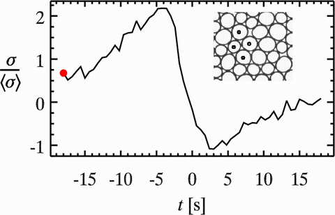
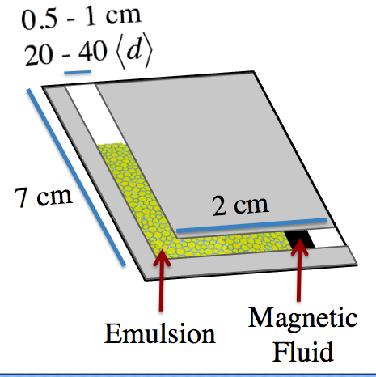
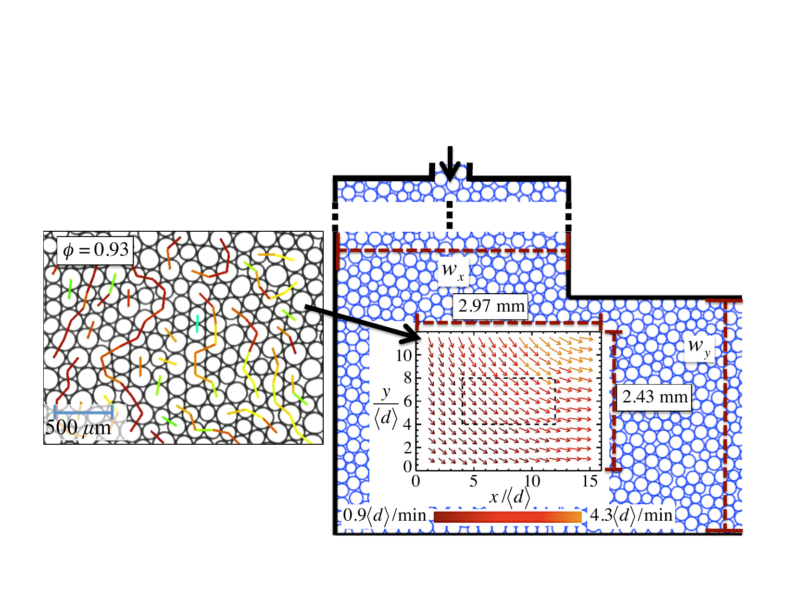
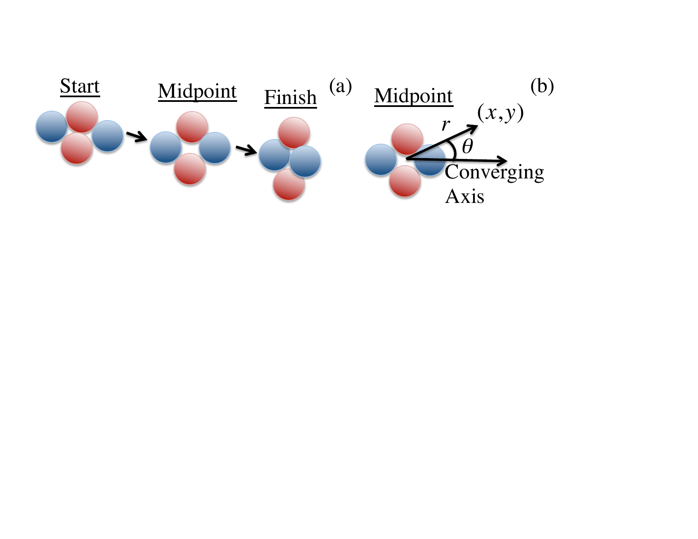

K. W. Desmond, E. R. Weeks · Physical Review E, 2015
When a dense disordered material flows — whether it's foam, emulsion, or a colloidal glass — it does so through sudden, localized particle rearrangements. Each rearrangement not only moves particles but redistributes the stresses on their neighbors, potentially triggering a cascade of further rearrangements. Despite the central role of this stress redistribution in theoretical models of soft glassy flow, directly measuring it in experiment had never been achieved across a wide range of packing fractions. This work does exactly that.

A T1 rearrangement event: four droplets exchange neighbors in a snap. This microscopy movie captures the event in real time in a flowing quasi-2D emulsion, with the droplet deformations encoding the evolving inter-particle stress field.

Experimental setup: bidisperse emulsion droplets flow through a corner geometry. The velocity gradient in the corner drives frequent T1 rearrangements, allowing statistical averaging across many events.

Measured velocity field and instantaneous force chain network in the flowing emulsion. Force chains (colored lines) fluctuate as T1 events continuously rewire the contact network.
The T1 Event — A Local Rearrangement
The elementary rearrangement in a dense emulsion is a T1 event: four droplets, initially with two pairs touching, snap into a new configuration where the other two pairs become neighbors. These events are sudden (milliseconds) and localized (a few droplet diameters), but their stress footprint extends further. By measuring the force on every droplet before and after each T1 event, we directly quantified how the stress field changes in the surrounding region.

Schematic of a T1 rearrangement. Four droplets exchange neighbors along the converging axis. The coordinate system (r, θ) relative to the event midpoint defines the quadrupolar symmetry of the stress response.The experimental flow geometry: emulsion is pumped through a corner, inducing a velocity gradient and many T1 events. Force chains (colored lines) reveal the instantaneous stress state of the packing.
A Quadrupolar Stress Pattern
The stress redistribution following each T1 event is not random — it has a clear quadrupolar structure. Neighboring droplets along the compressing axis of the event tend to experience increased stress, while those along the extending axis are relieved. This pattern, predicted by simulations and soft glassy rheology theory, is here confirmed experimentally for the first time over a wide range of packing fractions (φ = 0.88 to 0.96). Importantly, the redistribution becomes more anisotropic at higher φ, meaning denser emulsions concentrate stress more sharply — which in turn makes cascading rearrangements more directional and correlated.
Connecting Local Events to Macroscopic Flow
A key result is that the stress redistribution influences where the next rearrangement will occur — droplets that receive additional stress from a T1 event are more likely to rearrange next. This coupling between local stress changes and subsequent rearrangement probability provides direct quantitative evidence for the non-local constitutive behavior predicted by fluidity models of soft glassy flow. The results bridge the gap between microscopic particle-scale dynamics and macroscopic rheological models, and validate the core assumptions of theories that have been used to describe flow in foams, emulsions, and colloidal glasses.
The full force chain network evolving in real time as the dense emulsion flows through the corner geometry. Each colored line segment connects two droplets in contact; line thickness and color indicate force magnitude. T1 events appear as sudden local rewirings of the network, each followed by a ripple of stress redistribution in the surrounding region.
Close-up view of the force chain network evolving around T1 rearrangement events. As each event fires, the local contact forces reorganize — stresses increase along one axis and decrease along the perpendicular axis, producing the characteristic quadrupolar redistribution pattern.